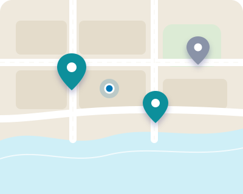

Clinics near you
Find a Dermatologist
Find skin clinics and dermatologists near you, then reach out directly and share your consultation summary.
3 sample clinics
Sample dataSkinluxe Skin & Wellness Center
Coastal Dermatology Associates
